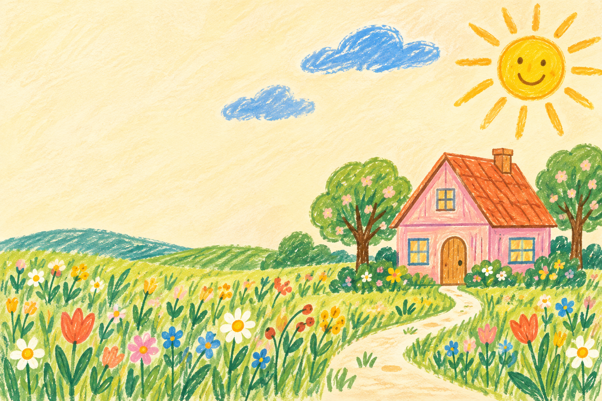

✳ A LITTLE GARDEN, ALL FOR YOU
笑楠，
生日快乐呀！
To Shannon Ma, with a whole lot of sunshine.
把阳光、鲜花和小小的好运，
都装进这座只属于你的生日花园。
今天所有的好运，都偏向你。

今天的主角，是你呀 ♡
a little sunshinefor your new year.
01 / A POCKETFUL OF GOOD WISHES
摇一摇，好事要发生啦✿
这里的每一支，都是上上签。
给新一岁的你愿望不用很大，
愿望不用很大，
开心就很好。
十二支小小的生日签，
藏着十二种大大的祝愿。
慢慢抽，好运会一一来到。
闭上眼，在心里许个愿吧。
已收集 0 / 12 份祝福
收下好运的方法
- 01心里许一个小愿望
- 02轻轻摇一摇签筒
- 03把祝福装进口袋
别着急，
属于你的美好都在路上。
02 / LITTLE THINGS TO KEEP
你的好运收藏夹
还有 12 份美好，等你慢慢遇见。
点开已收集的签，可以再读一遍。喜欢的祝福，值得反复看。
ONE MORE LITTLE SURPRISE
还有一封信，想慢慢读给你听。
集齐十二支生日签，就能拆开这份小小的心意。